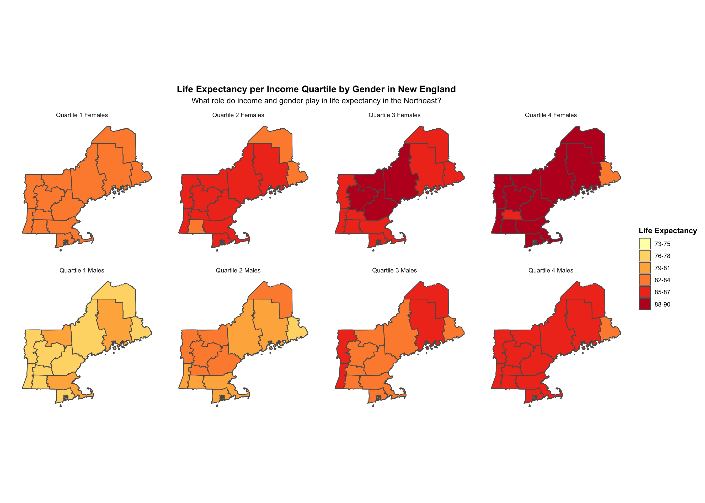
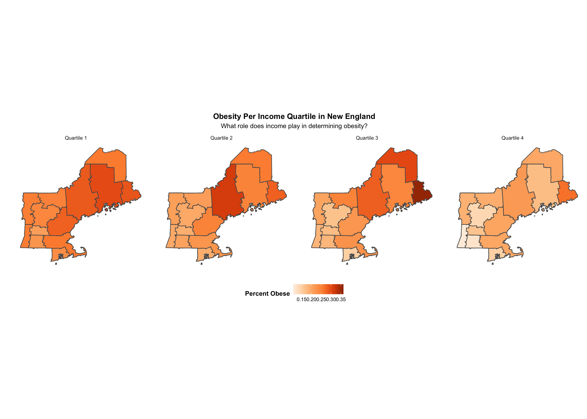
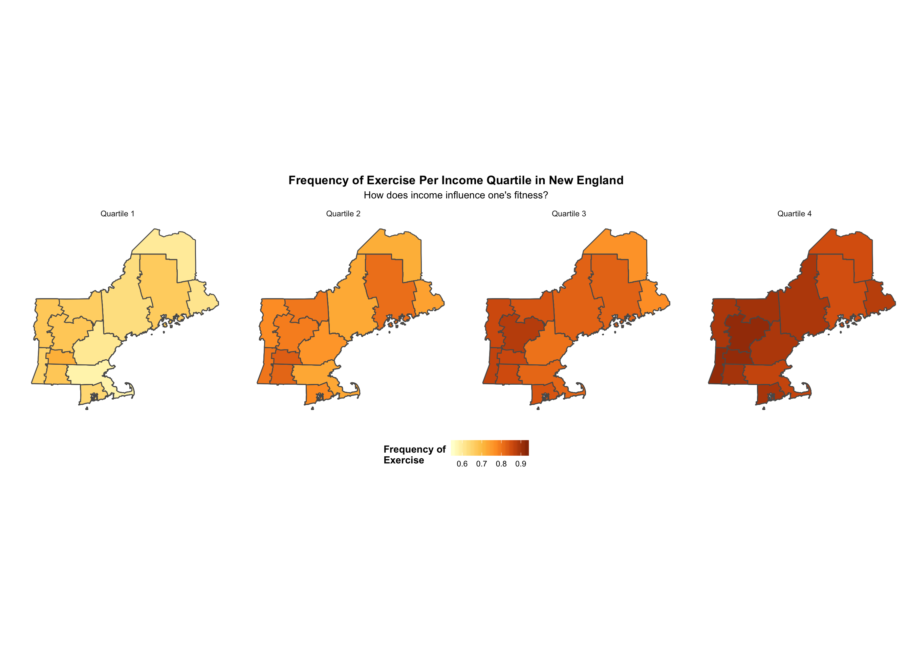
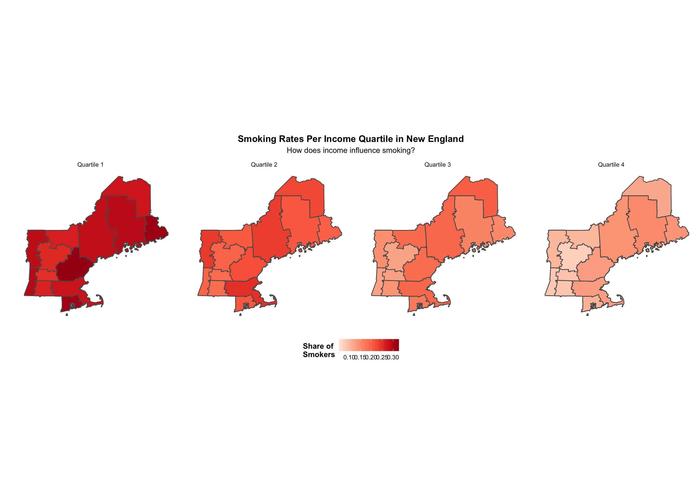

This visualization displays the life expectancy of New Englanders in 2000 separated by both sex and income quartile. The lowest income quartile is represented by the number 1, while the highest is by the number 4. This data used in this analysis was taken from a paper titled “The Association between Income and Life Expectancy in the United States, 2001-2014” by Raj Chetty et al. In their paper, they constructed income quartiles using income data for the US population through 1.4 billion deidentified tax records between 1999 and 2014. Additionally, mortality data was obtained from Social Security Administration death records. These data were used to estimate race- and ethnicity-adjusted life expectancy at 40 years of age by household income percentile, sex, and geographic area, and to evaluate factors associated with differences in life expectancy.
Firstly, in New England, it appears that life expectancy per income quartile is not equivalent by gender. This visualization shows that on average, women have a higher life expectancy than men in all income quartiles. Additionally, life expectancy increases by income quartile. Therefore, perhaps unsurprisingly, it appears that life expectancy may be a byproduct of income inequality. It will be interesting to see if the correlation between income inequality and health inequality continues over specific health indicators that contribute to life expectancy, such as tobacco use, obesity, and frequency of exercise. Click on the read more tab to see!
To further investigate the possible factors which may influence low-income peoples’ relatively depressed life expectancies, we used survey data from the Behavioral Risk Factor Surveillance System (BRFSS) during the year 2000, found in Chetty et. al’s data set. The BRFSS is the nation’s premier provider of health-related telephone surveys which collect state data about U.S. residents regarding their health-related behaviors. The three health indicators we considered by income quartile were tobacco usage, obesity rates, and exercise rates.

The US is one of the wealthiest countries in the world yet it has one of the highest obesity rates. One-third of the population is obese while another third is overweight (American Diabetes Association.) Hunger and lack of availability of healthy foods are two contributing factors to the higher level of obesity among people living in poverty. Poverty-dense urban areas are oftentimes referenced as “food deserts” because of the lack of availability and affordability of fresh and good quality food. However, hunger and poor availability of healthy food is only one reason why obesity tends to track with poverty. Obesity is more prevalent among men in the middle income distribution than in the lowest and highest brackets. Women on the other hand have a higher rate of obesity in the lowest income bracket and have lower rates in the top and middle distributions. While the states that make up New England have obesity rates lower than the national average, obesity in New England follows the national trend of varying with income.

As an attempt to further explain the factors which may contribute to low-income people’s high levels of obesity, we created the visualization above which displays New England’s major commuting zones, colored as the fraction of exercise each survey participant partook in during the past 30 days and sorted by each income quartile. Since there is an association between sedentariness, poor health, and obesity, we felt that exercise rates might explain low-income obesity in New England. Given the prior visualization results, the fact that this visualization also shows that low-exercise rates is correlated with low-income is unsurprising. However, the reason for it is shocking. A survey done by the health promotion group, Shape Up America suggests that it isn’t a lack of knowledge that keeps poor people from exercising more, rather it is a lack of means. Low-income people face major obstacles to exercising such not feeling safe exercising outdoors in their neighborhoods due to violence, not having access to public facilities, and the inability to afford private facilities. This suggests, improving the poor’s access to safe exercise facilities could prove to largely effective at combating prevailing health deficits.

Cigarettes pose a great risk of death and disease, specifically lung cancer and have been manufactured to be more addictive over the years. The smoking rate used to be higher among more educated people pre-WWII- before the health risks of smoking were widely known. After the first surgeon general’s report on smoking was issued in 1964, more educated individuals stopped smoking as much and the tobacco industry began targeting low-income individuals (Truth Initiative.) Tobacco retailers marketed their tobacco products to low-income individuals by attaching coupons to food stamps and giving out free cigarettes in housing projects. The tobacco industry fights to keep prices low so that low-income people can continue to buy cigarettes by spending billions of dollars each year to fight cigarette tax and price increases (Truth Initiative.) Now, smoking is linked with lower levels of education and 72% of smokers are from low-income communities and more than a quarter of people living below the poverty level and three-quarters of homeless people use tobacco (Public HEalth Law Center.) A 2016 report on the economics of tobacco published by the National Cancer Institute and World Health Organization found that a significant amount of health disparities between the rich and poor can be attributed to the differences in tobacco habits between income groups. Compounding this effect is the fact that low-income communities have less access to resources to help them quit smoking, and are exposed to less education on the health hazards of smoking.
Our findings were consistent with the sources we referenced: health inequality is related to income inequality, and low income areas tend to be less healthy than higher income areas. This trend holds true over each income quintile; in other words, the higher the income quintile, the healthier the individuals in that area. Wealthier areas in New England tended to have lower rates of obesity, lower tobacco use, more frequent exercise rates, and higher life expectancies. Interestingly, we found that women tend to live longer than men in their income quintile for all income quintiles. Even though New England is comprised of healthy states relative to states in other regions, health inequality related to income inequality is still prevalent.
Why are 72% of Smokers from Lower-income Communities?, Truth Initiative, 2018.
Tobacco is a Social Justice Issue: Low-income Communities, Truth Initiative, 2017.
Tobacco Use Among the Homeless Population: FAQ, Public HEalth Law Center, 2016.
Poverty and Obesity in the U.S., American Diabetes Association, 2011.
Adult Obesity in the United States, The State of Obesity, 2018.
State-Specific Prevalence of Current Cigarette Smoking and Smokeless Tobacco Use Among Adults — United States, 2014, Centers for Disease Control and Prevention, 2017.
Poor Lack Means to Exercise, Survey Says : Health: The less people earn, the more likely they are to say that their neighborhood is unsafe for workouts, poll finds., Los Angeles Times, 1995.